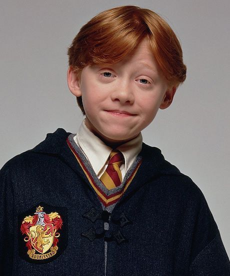
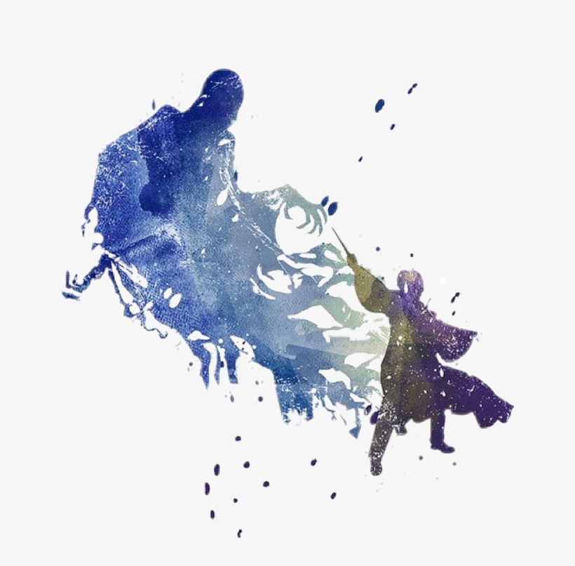

Harry Potter
| Apariencia | Cabello negro, gafas redondas y una cicatriz en forma de rayo en la frente. Suele vestir el uniforme de Gryffindor. |  |
|---|---|---|
| Rol | El Elegido. Lucha contra Voldemort y defiende el mundo mágico junto a sus amigos. | |
| Habilidades | Valor, liderazgo, defensa contra las artes oscuras y conexión con Voldemort. | |
| Ventajas | Gran lealtad y valentía. Capacidad para superar el miedo y actuar con el corazón. | |
| Debilidades | A veces impulsivo y demasiado confiado. Su conexión con Voldemort lo expone. |
Hermione Granger
| Apariencia | Cabello castaño y rizado, siempre con un libro en mano. Orgullosa Gryffindor. |  |
|---|---|---|
| Rol | La mente del trío. Su conocimiento y lógica han salvado al grupo muchas veces. | |
| Habilidades | Hechizos complejos, lectura de runas antiguas, pociones y pensamiento estratégico. | |
| Ventajas | Extremadamente inteligente. Siempre preparada y con soluciones prácticas. | |
| Debilidades | Puede parecer mandona y demasiado perfeccionista. Le cuesta confiar en la intuición. |
Ron Weasley
| Apariencia | Pelirrojo, alto y con pecas. Siempre fiel a su familia y amigos. |  |
|---|---|---|
| Rol | El corazón del grupo. Aporta humor, lealtad y valor cuando más se necesita. | |
| Habilidades | Ajedrez mágico, defensa básica, gran instinto en batalla. | |
| Ventajas | Fuerte vínculo emocional con su entorno. Su valentía se muestra en momentos clave. | |
| Debilidades | Inseguridades y celos. A veces se siente opacado por los demás. |
Hechizo: Expecto Patronum
| Descripción | Hechizo avanzado que convoca un Patronus, un guardián mágico que repele Dementores. |  |
|---|---|---|
| Tipo | Defensivo | |
| Usuario | Harry Potter es uno de los magos más jóvenes en conjurarlo correctamente. | |
| Efectos | Expulsa Dementores, da esperanza y representa la forma de un animal ligado al alma del mago. | |
| Dificultad | Alta. Requiere un recuerdo feliz muy poderoso y concentración emocional. |